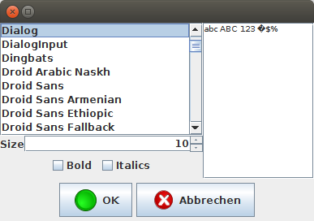
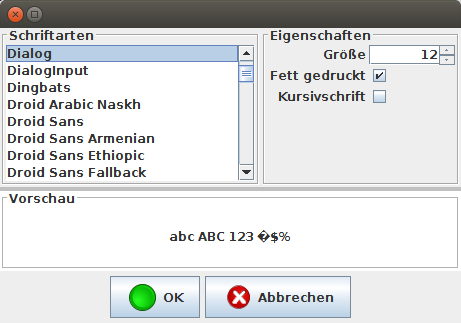
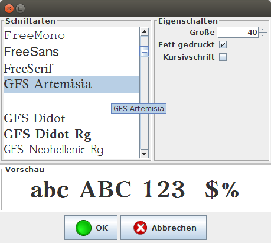

Aus FontChooser gelernt

Java selbst bietet keine Gui-Komponente zur Auswahl einer Schriftart an. Daher hatte ich vor einigen Jahren - wie so viele andere auch - eine eigene Komponente dafür erstellt. Ich wollte sie etwas aktualisieren und aufpeppen und lernte dabei eine interessante Lektion...
Bisher sah meine Komponente so aus:

FontChooser altEher langweilig und auch nicht das Layout, das man standardmäßig erwarten würde. Daher wurde die Komponente neu strukturiert und bei der Gelegenheit auch gleich internationalisiert - danach sah sie dann so aus:

FontChooser neuerAus meiner Sicht bereits eine klare Verbesserung.
Allerdings hatte ich an dieser Stelle einen schweren anfall von Featuritis - ich wollte, dass man bereits in der Liste mit Schriftnamen einen ersten Eindruck von der visuellen Erscheinung der jeweiligen Schriftart erhalten kann, wie das heutzutage viele andere Anwendungen auch bieten. Bei Googles Bildersuche findet man dazu zum Beispiel folgende Illustration dazu:
 Angestrebtes Feature
Angestrebtes Feature
Als ich einen entsprechenden Renderer dafür entwarf stellte ich fest, dass das Öffnen des Dialogs ewig dauerte. Die Ursache dafür war, dass für alle Zeilen der Liste der Renderer instantiiert wurde, was eine gewisse Zeit in Anspruch nahm, da dafür ja jetzt jedesmal eine neue Schrift geladen und aufbereitet werden musste. Ich hatte natürlich angenommen, dass das nur für die Zeilen geschehen würde, die im sichtbaren Ausschnitt lagen.
Daher machte ich mich nun daran, den Renderer so umzuschreiben, dass er nur dann eine Schriftart laden würde, wenn er für eine der im sichtbaren Bereich liegenden Zeilen der Liste aufgerufen werden würde. Dabei lernte ich Interessantes: Ich wollte den Check erledigen, indem ich nachsah, ob der Punkt (indexToLocation) der darzustellenden Zeile im sichtbaren Rechteck lag. Ergebnis dieser Idee war eine StackOverflowException, da zur Berechnung der Location der Renderer benutzt wird. Letztlich scheiterten alle Versuche, die Information zu erlangen, aus genau diesem Grund - ich musste tatsächlich diese Informationen von Hand errechnen - aus der festen Zeilenhöhe (die ich auch schon vor den StackOverflow-Versuchen festgelegt hatte) und dem sichtbaren Rechteck errechnete ich die erste und letzte sichtbare Zeile und setzte den Font nur dann am Renderer, wenn der aktuelle Index zwischen diesen beiden errechneten werten lag. Dadurch war der Dialog jetzt nicht nur so schnell, wie ich es erwarten würde, sondern er sah auch so aus, wie ich es mir gewünscht hatte:

FontChooser neuDaraus ergab sich für mich eine wichtige Information zum Thema Renderer, die ich so formuliert bisher noch nirgends gefunden habe: zeitkritische Operationen gehören nicht in die getXXXRenderer-Methoden hinein (da die für jedes Item in der Komponente aufgerufen wird - unabhängig von ihrer Sichtbarkeit), sondern in die paint-Methode - die wird nämlich tatsächlich nur aufgerufen, wenn der Renderer für ein Item im sichtbaren Ausschnitt der Komponente verantwortlich ist.


Vor 5 Jahren hier im Blog
-
IOTA oder wie eine Blase funktioniert
17.06.2017
Ich wurde gefragt, ob ich Einschätzungen zu Crypto-Currencies machen könnte. Speziell wurde ich nach Ethereum gefragt - einer, von der ich bereits gehört und für die ich mich bereits kurzzeitig milde interessiert hatte - und IOTA, die mir völlig unbekannt war. Ich begann mit einer Analyse der mir unbekannten und wurde überrascht.
Weiterlesen...
Tags
Android Basteln C und C++ Chaos Datenbanken Docker dWb+ ESP Wifi Garten Geo Git(lab|hub) Go GUI Gui Hardware Java Jupyter Komponenten Links Linux Markdown Markup Music Numerik PKI-X.509-CA Python QBrowser Rants Raspi Revisited Security Software-Test sQLshell TeleGrafana Verschiedenes Video Virtualisierung Windows Upcoming...
Neueste Artikel
- LinkCollections 2022 V
Nach der letzten losen Zusammenstellung (für mich) interessanter Links aus den Tiefen des Internet für dieses Jahr folgt hier nunmehr die nächste:
Weiterlesen... - Minifying elbosso.github.io
Ich habe mir ein paar Gedanken über den Ressourcenverbrauch meiner Heimatseite im Zischennetz gemacht, um sie ien ganz klein wenig "grüner" zu gestalten...
Weiterlesen... - tesseractuzneditor
Ich habe hier bereits verschiedentlich davon berichtet, wie ich versucht habe, mich dem Thema Optical Character Regognition (OCR) zu nähern. Nach einigen interessanten Diskussionen in den vergangenen Monaten habe ich jetzt ein damit in Verbindung stehendes Projekt auf Gitlab aufgesetzt
Weiterlesen...
Manche nennen es Blog, manche Web-Seite - ich schreibe hier hin und wieder über meine Erlebnisse, Rückschläge und Erleuchtungen bei meinen Hobbies.
Wer daran teilhaben und eventuell sogar davon profitieren möchte, muß damit leben, daß ich hin und wieder kleine Ausflüge in Bereiche mache, die nichts mit IT, Administration oder Softwareentwicklung zu tun haben.
Ich wünsche allen Lesern viel Spaß und hin und wieder einen kleinen AHA!-Effekt...
PS: Meine öffentlichen GitHub-Repositories findet man hier.